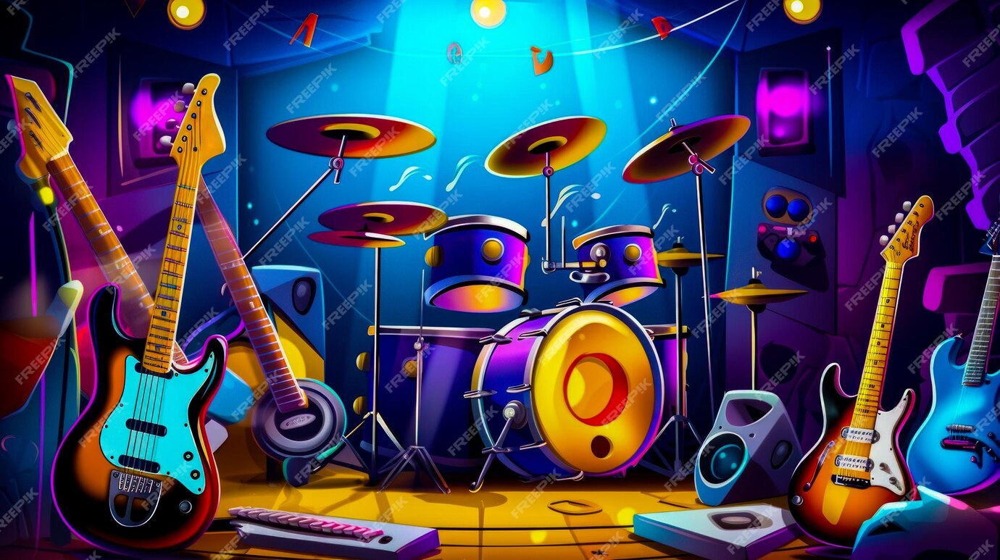

About musical instruments
Music is an essential part of human culture and musical instruments have been used for centuries to create beautiful melodies and rhythms. From the soothing strumming of a guitar to the majestic sound of a grand piano, each intrument has its own unique characteristics and history.
This website aims to provide information about various musical instruments including their origins, features and popular brands. Whether you're a seasoned musician or just starting your journey, we hope you find this resource helpful and inspiring.